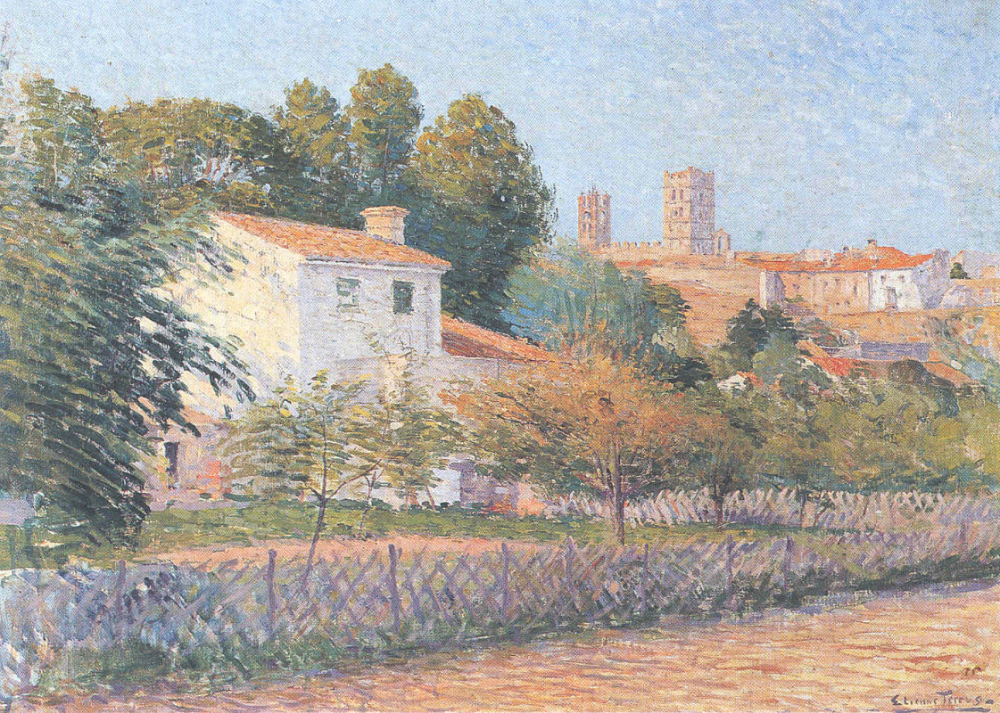

Французский музей обнаружил, что половина его коллекции – подделки
Государственный музей во Франции обнаружил, что более половины его коллекции состоит из ничего не стоящих подделок. Эксперты опасаются, что собрания других публичных галерей также могут быть полны фальшивых произведений.

Напомним, в ноябре 2017 года музей в Дюссельдорфе сообщил, что картина «Чёрный прямоугольник, красный квадрат», которую считали произведением Казимира Малевича, оказалась подделкой. Первоначально полотно было датировано 1915-м годом, но эксперты пришли к выводу, что оно было создано не раньше, чем в 1950-м.
Тревогу поднял один из искусствоведов, который обнаружил, что картины, приписанные живописцу Этьену Террюсу, были созданы уже после его смерти в 1922 году. Догадку подтвердили эксперты, которые готовили инаугурационную выставку после ремонта музея художника в родном Эльне. Оказалось, что 82 из 140-ка работ, выставленных в галерее на юге Франции, были произведениями фальсификаторов.
Многие из этих картин маслом, акварелей и рисунков в последние два десятилетия приобрёл муниципалитет за общую сумму в 160 тыс. евро. Другие были переданы музею двумя группами местных энтузиастов, которые купили их на пожертвования. Ещё часть завещана частным коллекционером.
Ив Барниол, мэр Эльна, назвал новость «катастрофой»: «Я поставил себя на место всех людей, которые пришли в музей, заплатили за вход и увидели поддельные произведения искусства. Это недопустимо, и я надеюсь, что мы найдём виновных». Муниципалитет подал судебные иски о подлоге и мошенничестве. Полиция изъяла подделки и пытается отследить фальсификаторов и дилеров, которые их продали.
Детективы подозревают, что в других музеях также может находиться большое количество поддельных произведений, приписанных южнофранцузскому художнику. Британская газета The Telegraph цитирует источник, близкий к расследованию: «Мы знаем, что было много фальсификаций, и мы считаем, что за этим стоит хорошо организованная сеть».
Французская полиция допускает существование фальшивок, приписываемых другим каталонским художникам, таким как Пьер Брюн, Бальбино Жинер и Огюст Аникот. В целом, по оценкам искусствоведов, по меньшей мере пятая часть картин, принадлежащих крупным музеям по всему миру, являются подделками.
Автор: Влад Маслов15 АВГУСТА